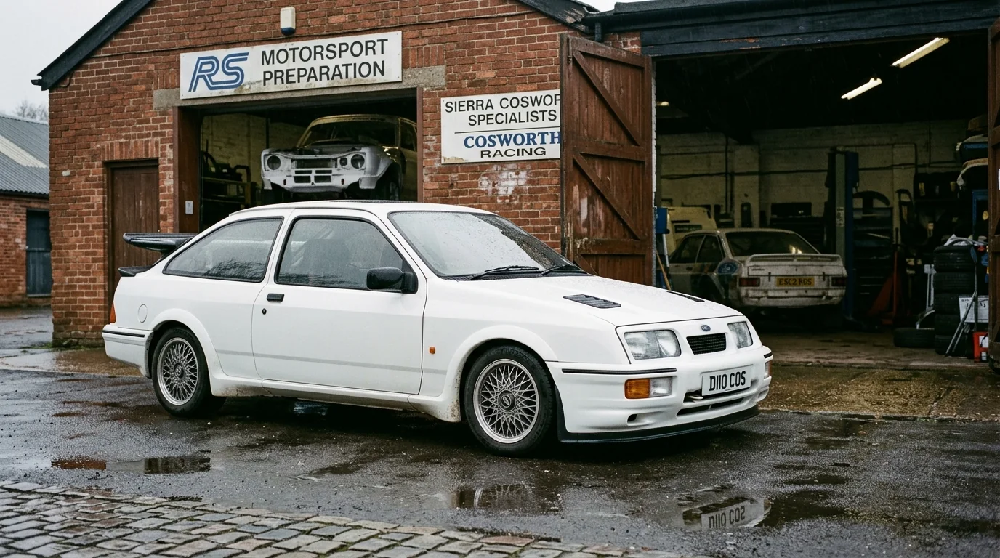
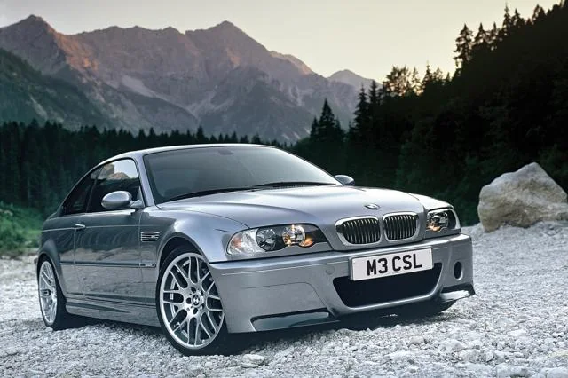
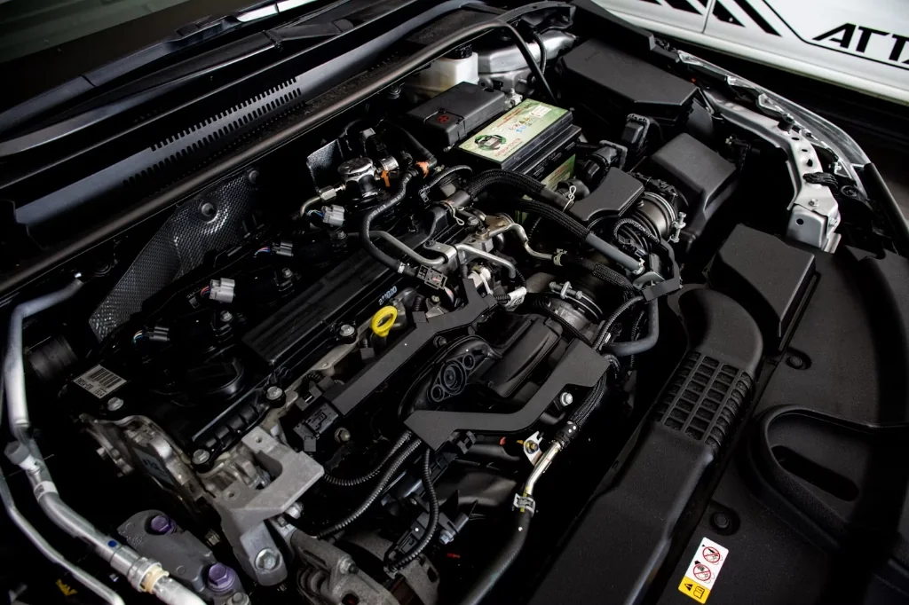

Without Datum, history rots.
With Datum, it holds.
The same car. The same twenty years. Two fates — watch them side by side:
“Twelve years of receipts in a shoebox. One rainy viewing. Zero proof.”— THE PROBLEM, IN ONE SENTENCE
WITHOUT DATUM — IT ROTS
WITH DATUM — IT HOLDS
AN ILLUSTRATION OF ONE CAR'S PAPER TRAIL — LEFT: WHAT TIME TAKES · RIGHT: WHAT DATUM KEEPS
To give relevant automotive information a more coherent, traceable and accessible structure — without claiming to already hold it.
Cover the plate yourself.
Drag the black cover over the number plate. Datum's publishing ritual works exactly like this — nothing shares until you place it.


More than a vehicle profile.
The vehicle is the centre. Everything else orbits it. Select a relationship to see what it means:

Your car. Your history.
Your connection.
Custodianship is the oldest relationship in motoring — you hold the machine between its past and its future. Datum gives that holding a form: commission your car and watch the record confirm it, plan a drive and confirm only what truly happened, keep memories that stay yours until you choose otherwise.
Below: one synthetic vehicle, four illustrative moments.
“The car finally had papers that couldn't get lost, wet, or doubted.”— ILLUSTRATIVE CUSTODIAN

The day it becomes yours
A 1991 coupé changes hands. Its first record opens: identity, configuration, starting mileage — a biography with page one.

Kept where the work happens
Each service documented at the ramp, attributed to the workshop that did it, and kept with the car — not in a drawer.
A dawn pass, deliberately recorded
The route is remembered; the exact home address never leaves the driveway. What mattered is kept. What shouldn't travel, doesn't.

Years later, it reads whole
Engineering, evidence, people and memory in one place — ready for the next custodian, or simply for yourself.
The work behind the machine
deserves continuity.
Potential directions for the trade — opportunities under exploration, not live products. The principle is already proven in the craft itself: work attributed at source, credit that compounds, histories that survive handover.

Document where work happens
A service creates its own record at the ramp: what was done, what supports it, who stands behind it.
- Structured service documentation
- Evidence attached at source
- Clearer customer communication
Credit that compounds
Each record carries its source. Good work stays visible on every vehicle it touched — reputation that travels with the machine.
- Source-attributed records
- Standing specialist profile
- Long-term customer relationships
Histories that survive handover
Custodians change; the record persists. Permissioned history keeps maintenance meaningful across owners and decades.
- Ownership-spanning records
- Permission-aware sharing
- Preservation-grade storage thinking
Bring the car you love.
We will show you why it's so much.
Every machine carries engineering, history and culture inside it. Choose one — follow the thread from metal to meaning.
Datum's Motor World connects any car to its engineering, its racing past and its culture — so the machine you already love keeps unfolding.
HOW IT WORKSOr follow one thread end to end — vehicle, engine, system, knowledge, motorsport:
Turn the key yourself.
The same ignition ritual that opens the Datum app — working here, live. Hold rev, release in the gold zone, then start the engine.
Hold REV or Space to charge, release to score · Enter starts · a game, silent by design.
Three illustrations of what could be.
Product-use illustrations. No customers, no measured outcomes, no testimonials.
Four seasons, one biography
Acquisition, care, a mountain drive, winter reflection — each moment a dated, sourced entry until the year reads like a chapter.
A fictional valve-clearance service
A two-bay workshop measures, photographs and records a shim service. Evidence attributed to the workshop, reviewable by the custodian — a fiction demonstrating a workflow.
Starting from an E46 M3
Curiosity about one coupé leads to its S54 engine, engine management, diagnostics and touring-car heritage — the diagram above, walked.
Engineered to remember.
Designed to question.
A tamper-evident record helps detect modification. It does not certify ownership, workshop quality, odometer truth or condition. Datum keeps these stages apart — on purpose.
Recorded
Structured entries with source, date and authorship. The foundation everything else stands on.
Supported by evidence
Photographs, documents and measurements attached at source — separable from the claims they support.
Independently corroborated
Confirmation from separate qualified parties. A direction, not a capability — nothing here is certified today.
Prototype previews.
Real photography standing in for forthcoming interface captures, which will be taken from the working application and labelled as such.
Built from a belief that automobiles
are more than machines.
Datum is an independent, founder-led automotive technology initiative, in development. It began with a passion for automobiles and an interest in connecting the engineering, history, care and human relationships around them. There is no corporate apparatus to announce — only work to show, and an invitation to shape it.
An invitation is earned the old way.
Datum is not bought into. It is recognised into. Don't tell us net worth or following — tell us about the machine, and what it has meant. Convince us you are one of the people who keep cars alive.
What do you keep?
Year, marque, model — and how it came to you. Barn find, inheritance, saved-up-for. Provenance begins with honesty.
A drive you'll never forget
One road, one morning, in as much detail as you can stand. We can tell a driver by how they describe a corner.
What have you done yourself?
An oil change counts. So does a rebuild. Tell us what your hands know — or what you are learning, and from whom.
What doesn't impress us: collections counted, not driven. What does: mileage with meaning, maintenance with receipts, and love with evidence.
Future private testing
For those who keep cars and would test thoughtfully. No dates promised.
Workflow research
For workshops interested in documentation pilots and honest feedback loops.
Technical dialogue
For partners who want to discuss the engineering and its limits.
Direction & opportunity
For those following Datum's direction and possible commercial paths.
Register interest — demonstration only.
Choose an audience and press the button to preview the interaction.